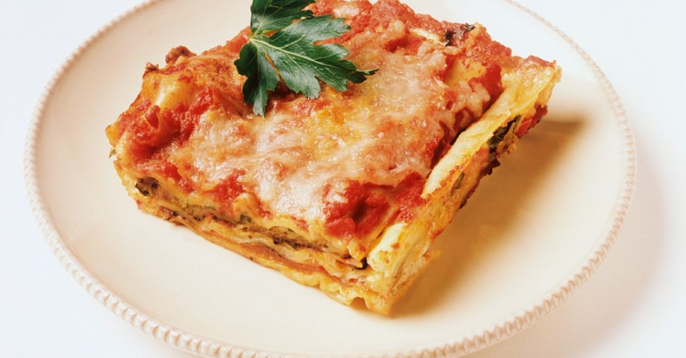

Adam Ragusa Lasagne

A simple ricotta and tomato lasagne recipe
Ingredients
- 1 pound (454g) box of dry lasagna noodles fitted to your pan (you might not need all of it; I use De Cecco Lasagna No. 1, which fits the 8 inch pan)
- 1 28 oz (800g) can of crushed tomatoes (you might not need all of it; I use Pastene Kitchen Ready or Muir Glen)
- 1 pound (454g) ricotta cheese
- 1 pound (454g) grated mozzarella (you might not need all of it)
- 1/2 cup (50g) grated parmesan or pecorino
- olive oil
- salt
- seasonings (I use garlic & onion powder, dried oregano/basil/parsley/marjoram, dried chili flakes and pepper)
- fresh herb for garnish (I use basil)
Steps
- Cover the bottom of the pan with a layer of crushed tomatoes, drizzle in a little olive oil,
and season that layer lightly with salt and your other herbs and spices. Lay in the first layer
of lasagna noodles (don't parboil them first), and dust them with a little salt. Lay in a layer
of ricotta and sprinkle on some mozzarella and parmesan. Lay in your second pasta layer and
sprinkle them with a little salt. Lay in more tomatoes and repeat until you have built at least
four layers, with tomatoes atop the final layer, making sure to reserve tome mozzarella for melting on the top later.
- Cover the pan tightly with foil and bake it for about 45 minutes. Take the foil off, sprinkle on some
mozzarella and bake for another 15 minutes. At the very end, turn on the broiler (grill) to brown the
cheese to your liking this should only take a couple minutes, so watch it closely.
- Let cool at least 15 minutes before cutting and serving with fresh herbs.
If you want a tidier presentation, chill the lasagna whole in the fridge.
When it's firm, you'll get cleaner edges when you cut. Reheat the cut pieces
on top of a little splash of water in a covered baking dish in the oven
for 15 minutes. Uncover and broil on a little more mozzarella, to make the top look nicer.